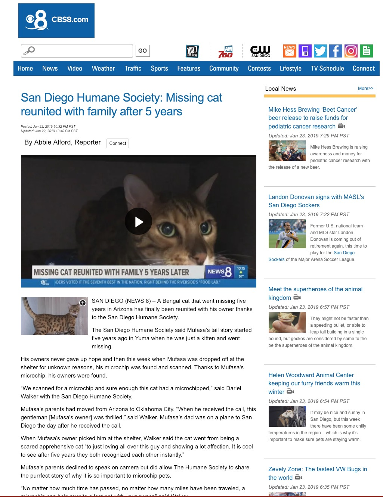

Why is natural language data useful?
What are the characteristics of a language corpus?
How do you build a corpus?
How do you choose which corpus to use?
How do we do n-gram analysis?
What other methods help us understand text data?
644 million active websites (Source)
Mayo Clinic enters 298 million patient records per year (Source)
58 million Tweets per day (Source)
294 billion emails sent daily (Source)
Text messages, blog posts, Facebook updates…
… and that’s just the digital stuff
It tells us about the world
It provides valuable information
It tells us about language is used
It gives us data for training language models!
Coverage of major news events
Series of medical records
Large bodies of legal text
Reports from many analysts
Live streaming tweets
What do people think?
Who likes it?
Who hates it?
Where is demand greatest?
What are the most common likes and dislikes?
“How often is word X used to describe black athletes vs. white athletes?”
“Is the frequency of these words predicted by subject race?”
“What about racially loaded bigrams?”
Words like “Aggressive”, “Angry”, “Unstoppable”, “Playgrounds”, and “Ferocious” are preferentially applied to black athletes
Words like “Rolex”, “Wife”, “Family” are preferentially white
Work is ongoing
A probabilistic model which can predict and quantify the probability of a given word, construction, or sentence in a given type of language
“Yesterday, we went fishing and ca____”
“Pradeep is staying at a ________ hotel”
“Although he claimed the $50,000 payment didn’t affect his decision in the case, this payment was a bribe, for all ________”
“I’m sorry, I can’t go out tonight, I _________”
“I’m sorry, I can’t go out tonight, my _________”
“I’m hungry, let’s go for ________”
We need to know what language actually looks like to be able to analyze it
We need to know the patterns to be able to interpret them
To find patterns, we need to look at the data we’re modeling
What words or constructions are most probable given the prior context?
What words or constructions are most probable given the type of document?
What words or constructions are most probable in this language?
… and the probabilities come directly from the data you give it
Biased data lead to biased models
Bad data lead to bad models
So, creating a good corpus is important!
It’s a bunch of language data
… in a format that isn’t awful
… with all of the non-language stuff stripped out
… collected in an easy-to-access place
You might also have some metadata or annotations
Brown corpus: One million words
EnronSent Corpus: 14 million words
OpenANC Corpus: 15 million words (annotated)
NY Times corpus: 1.8 million articles
Corpus of Contemporary American English (COCA): 560 million words
iWeb Corpus: 14 billion words
Something easily readable by NLP tools
Something easily parsed for metadata
Plaintext or Plaintext Markup (e.g. YAML, XML) (rather than MSWord)
Only the language data (rather than non-language stuff)
Natural language data are really dirty
Markup, extraneous language, multiple articles on one page

The entire internet is a corpus
Getting everything into plaintext on your machine will be the fastest approach
“Which athlete is this describing? Are they black or white?”
“Is this is a positive review or a negative review?”
“Is this an article about watches, cars, or linguistics?”
“Is this from a book, article, tweet, email?”
“When was it written? By who?”
What language is this document in?
Which words are nouns? Verbs? Adjectives? etc
What is the structure of the sentence(s)?
Which elements co-refer to each other?
Gather language data
Clean the data, and put it in a sane format
Put it somewhere
Annotate it (if you’d like)
… but you don’t need to build a corpus for everything …
Tweets
Books
Newswire
Emails
Texts
Facebook posts
Watch nerd forums
Your models will reflect your training data
Biased corpora make biased systems
Choose your training data well
You’re building a system to discover events in news stories
… to detect gamers’ favorite elements of games
… to identify abusive tweets
… to summarize forums posts about products
… to generate next-word predictions from text messages
… to identify controversial political issues in another country, then further divide the public
You’re building a system to build an Alexa-style assistant
… to create a phone-tree
… to do machine translation from English to Chinese
… to build a document summarization tool for intelligence reports
Reading the corpus
Searching the corpus for specific terms
Searching the corpus for specific abstract patterns
Automatic classification of documents
Information extraction
Reading the data is a good first step
Humans are better at natural language understanding
Noise becomes super apparent to humans quickly
Sometimes, the patterns are obvious
Gentlemen, Attached is an electronic version of the “proposed” First Amendment to ISDA Master Agreement, which was directed by FED EX to Gareth Krauss @ Merced on October 11, 2001. On November 5th, Gareth mentioned to me that their lawyer would be contacting Sara Shackleton (ENA-Legal) with any comments to the proposed First Amendment. Let me know if I may be of further assistance.
Regards, Susan S. Bailey Senior Legal Specialist
Get information about the location, frequency, and use of a word
“Give me all instances of the word ‘corruption’”
enronsent08:17021:enlighten you on the degree of corruption in Nigeria.
enronsent13:20442:courts in Brazil which are generally reliable and free of corruption (e.g.,
enronsent17:45199:??N_POTISME ET CORRUPTION??Le n,potisme et la corruption sont deux des prin=
enronsent18:26272:electoral corruption and fraud has taken place, a more balanced Central
enronsent20:3642:by corruption, endless beuacracy, and cost of delays. These “entry hurdles”
enronsent20:23272:Turkish military to expose and eliminate corruption in the Turkish energy=
enronsent21:2159: employees, and corruption. The EBRD is pushing for progress
enronsent21:2292: government has alleged that corruption occurred when the PPA
enronsent22:30087:how did you do on the corruption test?
enronsent02:41843:ation’s energy needs analyzed and streamlined, Enron could do the job. If y=
enronsent11:22173:Let me know if anything needs changed or corrected.
enronsent30:46927:Means broken and needs fixed - like your Mercedes.
enronsent43:7591:Two quick questions that Doug Leach needs answered ASAP to get the oil ordered:
enronsent27:34968:? SK-Enron has several assets that can be leveraged into an internet play=
enronsent27:36353: leveraging our respective strengths
enronsent35:777:> Well, I know that you were leveraged too
enronsent36:2066:enhanced leveraged product is indeed what is under consideration.
enronsent37:10220:finance and origination skills would be best leveraged. I am very interested
enronsent37:15725:Overall, we’re leveraging our hedge fund relationships to generate more
enronsent41:38104:I believe this division of responsibilities leverages off everyone expertise
Look at 2000 product reviews, are they positive or negative?
Looking at text in 8000 sports articles, are they about black or white athletes
Looking at every email ever, does this involve the sale or brokering of WMDs?
What else?
“Generate a timeline from these six documents”
“Give me a summary of this news article”
“Tell me the information in this news article that isn’t contained in the other twelve ones”
“What feature of this new game do players who buy in-app purchases like most”
What else?
‘What is the probability of this event, given that this other event occurred?’
p(event|other event) means ‘the probability of an event
occurring, given that the other event occurred’What’s p(pun)? What about
p(pun|Will)?
What’s p(fire|smoke)? What about
p(smoke|fire)?
What’s p(Will calls in sick)? What’s
p(Will calls in sick|he did last class)?
What’s p(heads) on a fair coin? What’s
p(heads|prior heads)?
Does the change in conditioning event affect the observed probability?
One event’s probability depends on the other’s!
If so, there’s an informative relationship!
Two events have “mutual information” if there’s some relationship
Language modeling is about finding informative relationships between linguistic elements!
p('you'|'how are')
vs. p('dogs'|'how are')
p(adjective|'I am')
vs. p(noun|'I am')
p(good review | "sucks")
vs. p(bad review | "sucks")
An N-gram is a sequence of words that is N items long
1 word is a ‘unigram’, 2 is a ‘bigram’, 3 is a ‘trigram’…
We identify sequences in the text, then count their frequencies
And that’s N-Gram analysis
“How often does this sequence of words occur?”
Choose a (large) corpus of text
Tokenize the words
Count the number of times each word occurs
The language-specific process of separating natural language text into component units, and throwing away needless punctuation and noise.
Margot went to the park with Talisha and Yuan last week.
Although we aren’t sure why John-Paul O’Rourke left on the 22nd, we’re sure that he would’ve had his Tekashi 6ix9ine CD, co-authored manuscript (dated 8-15-1985), and at least $150 million in cash-money in his back pack if he’d planned to leave for New York University.
Which punctuation is meaningful?
How do we handle contractions?
What about multiword expressions?
Do we tokenize numbers?
I used nltk’s nltk.word_tokenize() function
Choose a (large) corpus of text
Tokenize the words
Count all individual words (using something like nltk)
Then all pairs of words…
Then all triplets…
All quadruplets…
… and so forth
The end result is a table of counts by N-Gram
We’ll use the EnronSent Email Corpus
~96,000 DOE-seized emails within the Enron Corporation from 2007
~14,000,000 words
This is a pretty small corpus for serious N-Gram work
#!/usr/bin/env python
import nltk
from nltk import word_tokenize
from nltk.util import ngrams
es = open('enronsent_all.txt','r')
text = es.read()
token = nltk.word_tokenize(text)
unigrams = ngrams(token,1)
bigrams = ngrams(token,2)
trigrams = ngrams(token,3)
fourgrams = ngrams(token,4)
fivegrams = ngrams(token,5)
‘The’ 560,524
‘to’ 418,221
‘Enron’ 391,190
‘Jeff’ 10,717
‘Veterinarian’ 2
‘Yeet’ 0
‘of the’ 61935
‘need to’ 15303
‘at Enron’ 6384
‘forward to’ 4303
‘wordlessly he’ 2
‘Let me know’ 6821
‘If you have’ 5992
‘See attached file’ 2165
‘are going to’ 1529
‘Please let me know’ 5512
‘Out of the office’ 947
‘Delete all copies of’ 765
‘Houston , TX 77002’ 646
‘you are a jerk’ 35
‘If you have any questions’ 3294
‘are not the intended recipient’ 731
‘enforceable contract between Enron Corp.’ 418
‘wanted to let you know’ 390
‘The’ 560,524
‘of the’ 61,935
‘Let me know’ 6,821
‘Please let me know’ 5,512
‘If you have any questions’ 3,294
We’ll come back to this later
You counted words. Congratulations.
What does this win us?
If we know how often Word X follows Word Y (rather than Word Z)…
“What is the probability of word X following word Y?”
p(me | let) > p(flamingo | let)
We calculate log probabilities to avoid descending to zero
Probabilities are more useful than counts
Probabilities allow us to predict
Answers “Is this likely to be a grammatical sentence?”
Any natural language processing application needs a language model
We can get a surprisingly rich model from N-Gram-derived information alone
“You are” (11,294 occurrences) is more likely than “You is” (286 occurrences)
“Would have” (2362) is more likely than “Would of” (17)
“Might be able to” (240) is more common than “might could” (4)
“Two agreements” (35) is more likely than “Two agreement” (2)
“Throw in” (35) and “Throw out” (33) are much more common than ‘Throw’ + other prepositions
n-grams provide a very simple language model from which we can do inference
“You shall know a word by the company it keeps” - John Rupert Firth
Probabilities of language are based in part on our interaction with the world
People at Enron ‘go to the’ bathroom (17), Governor (7), Caymans (6), assembly (6), and senate (5)
People at Enron enjoy good food (18), Mexican Food (17), Fast Food (13), Local Food (4), and Chinese Food (2)
Power comes from California (9), Generators (6), EPMI (3), and Canada (2)
Probable groupings tell us something about how this world works
Easy to understand and implement conceptually
Syntax and semantics don’t need to be understood
You don’t need to annotate a corpus or build ontologies
As long as you can tokenize the words, you can do an N-Gram analysis
Makes it possible for datasets where other NLP tools might not work
A basic language model comes for free
It works the same on 1000 words or 100,000,000 words
Modest computing requirements
More data means a better model
You see more uses of more N-Grams
Your ability to look at higher Ns is limited by your dataset
Probabilities become more defined
… and we have a LOT of data
“The tall giraffe ate.” and “The giraffe that ate was tall.”
“I bought an awful Mercedes.” vs. “I bought a Mercedes. It’s awful.”
“The angry young athlete” and “The angry old athlete”
We’ll fix this later!
I want to tell you the story of the least reliable car I ever bought. This piece of crap was seemingly assembled from spit and popsicle sticks, with bits of foil added in, all for $3000 per part plus labor. Every moment I drove it was offset with two in the shop, paying a Master Technician a masterful wage. Yet, despite a high price tag and decades of amazing reputation, the car was a Mercedes.
Models are only good at estimating items they’ve seen previously
“Her Onco-Endocrinologist resected Leticia’s carcinoma”
“Bacon flamingo throughput demyelination ngarwhagl”
This is is why smoothing is crucial
Assigning very low probabilities to unattested combinations
… and why more data means better N-Grams
Syntax, Coreference, and Part of Speech tagging provide important information
“You are” is more likely than “You is” (286 occurrences)
“… the number I have given you is my cell phone…”
No juxtaposition without resolving anaphora
“Time flies like an arrow, fruit flies like a banana”
There’s more to language than juxtaposition
They’re missing crucial information about linguistic structure
They handle uncommon and unattested forms poorly
They only work with strict juxtaposition
Skip-gram models allow non-adjacent occurences to be counted
“Count the instances where X and Y occur within N words of each other”
“My Mercedes sucks” and “My Mercedes really sucks” both count towards ‘Mercedes sucks’
This helps with the data sparseness issue of N-grams
The fact that ‘decalcify’ occurs ten times in the document is informative!
A comment which includes ‘fuck’ 15 times is likely to be negative
… and every unigram count is a column
You’ll generally scale it so that the most frequent is 1, potentially logging.
Toss this into a regression or SVM or randomforest and suddenly, you’re doing NLP
There are much better approaches
But this is a very easy, very good start
And can get you surprisingly far!
Keywords == Mentions, Mentions == Interest
Scan each Instagram post for certain keywords and product mentions
If monitored words and hashtags appear, show those accounts ads for related products and topics
Consider the people discussing the topic to be part of the target market
These people should see Hodinkee content more often
“blah blah blah blah Hodinkee travel clock blah blah blah blah blah blah”
“blah blah blah blah blah blah blah blah blah blah blah #HodinkeeTravelClock”
“blah blah Travel Clock blah blah Hodinkee blah blah blah blah blah blah blah blah blah blah”
“blah blah Hodinkee blah Travel Clock blah blah blah blah @Hodinkee”
“Let’s spam these people with ads for the clock”
“We should also make sure we show them more Hodinkee posts!”
“We should probably show them ads for similar products too!”
“lol did you see the $5900 Hodinkee travel clock? Who greenlighted this?”
“Proof that there’s a sucker born every minute #HodinkeeTravelClock”
“The new Travel Clock from Hodinkee doesn’t have an interesting movement, and the finishing looks rough. Yikes.”
“Why would Hodinkee sell a $6000 Travel Clock in the middle of a pandemic? Read the room, @hodinkee
Presenting topical ads to people who hate those topics is a waste of money
Funneling these people to Hodinkee will not help anybody
These people are likely not fans of other multi-thousand dollar travel clocks
You can’t provide any information back to Hodinkee to help them make better decisions
“Is this product-mentioning post positive, negative, or neutral?”
“What is the overall balance of sentiment about this product?”
“What are people saying about the price point? The fancy font?”
“What demographic is most likely to not find this product insultingly bad?”
“Should we post an apology?”
“This new travel clock really sucks”
“My new Dyson really sucks”
“It sucks that my Roomba doesn’t suck anymore”
“Yeah, sure, selling a travel clock during a pandemic is a great idea, @hodinkee”

N-grams are useful for capturing local context but fall short on semantic meaning
Represent words as vectors in a continuous space, capturing semantic relationships between words.
Words with similar meanings should have similar vector representations.
N-grams: Sparse, high-dimensional representations.
Word Vectors: Dense, low-dimensional representations.
“king” - “man” + “woman” ≈ “queen”
“I’m traveling in the sleaze dimension, and just moved from”lawyer” to “ambulance chaser””
Developed by Mikolov et al. in 2013. (The Paper)
Two major approaches:
Word vectors can be visualized in 2D or 3D space using techniques like t-SNE or PCA.
Words like "dog", "cat",
"wolf" cluster together.
Words like "king", "queen",
"prince" form another cluster.
Proximity in word vector space captures proximity in meaning!
You get a representation which more directly captures changes in meaning
You get a representation which takes into account more context
You can visualize the semantic space in a more interpretable way
"bank" (financial institution vs. river
bank)TF-IDF asks “What words are most important in this document?”
“What terms are unique and important to this document, relative to a bunch of other documents”
If a word is frequent and important in all of the documents, it’s probably less important in any of them
TF-IDF is a great way of figuring out what a document/comment/text is ‘about’
Effectively does dimensionality reduction on the TF-IDFs above (using Singular Value Decomposition)
Gets us three dimensions, for terms, importances, and documents
This gets us a very basic topic modeling, which clusters documents with more nuance based on their terms and relative importances
The math underlying LDA is complicated, so, not today
Identifies topics within documents (with emergent topics)
Attributes portions of documents to those topics
Identifies the words which correspond to those topics
It’s still based on bag-of-words approaches
It still can’t get ‘bank’ (of America) vs. ‘bank’ (of a river)
Topics can be hard to interpret
Something that captures semantic meaning, but in light of larger context
Something that can make inferences about meaning, based on the situation
Something that can explain clusters in terms of real world models
We need…